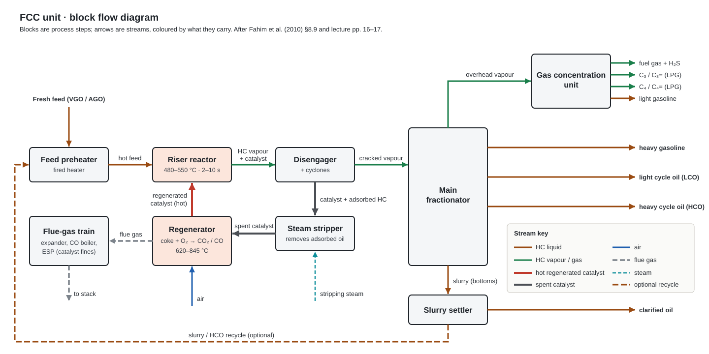

Petroleum Refining Engineering · presentation, 1 Oct
Fluid Catalytic Cracking
Heavy gas oil + hot acidic zeolite powder, a few seconds in a riser at ~500 °C → gasoline, LPG olefins, cycle oils. Coke on the catalyst is burned in a regenerator; that heat drives the cracking.

00Unit at a glance
FCC · unit datasheettypical values · chips = sources
- Feed
- Gas oil 316–566 °C (AGO, VGO) residue in RFCC after desulphurisation Bpp. 200–201
- Reactor
- Riser: pneumatic transport, ~plug flow + fluidised-bed regenerator BTable 8.5
- Reaction T
- 480–550 °C ≈ 533 °C riser outlet, max-gasoline case Bp. 208, Table 8.4
- Regenerator T
- 620–845 °C ≈ 727 °C in case Lp. 17 BTable 8.4
- Pressure
- 1–5 bar reactor ≈ 2.1, regen ≈ 2.3 barg Bp. 208, Table 8.4
- Catalyst / oil
- ≈ 5.4 kg/kg max-gasoline case BTable 8.4
- Main product
- Gasoline 35–60 wt% good octane BTable 8.2
- By-products
- Dry gas + H₂S, LPG, LCO, HCO/slurry, coke 3–5 wt% BTable 8.2
016-hour prep plan
| Time | Do this | Done when you can… |
|---|---|---|
| 0:00–0:30 | Datasheet above + ch 1 | say the one-line definition and the 3 bed types |
| 0:30–1:15 | Ch 2 parameter table + catalyst | recall T, P, time, C/O, zeolite Y formula |
| 1:15–2:15 | Ch 3: draw BFD, then PFD, from memory ×2 | trace a catalyst particle with temperatures |
| 2:15–3:15 | Ch 4: write the 6 mechanism steps from memory | write β-scission + H-transfer equations |
| 3:15–4:00 | Ch 5: regimes, riser data, heat balance, E8.2 | explain why coke yield is set by heat balance |
| 4:00–4:45 | Ch 6: yields, levers, 8-line conclusion | list yields and 5 levers |
| 4:45–5:30 | Rehearse the 10-minute talk below, twice, aloud | finish in 10 min |
| 5:30–6:00 | All quick checks (end of each chapter) | answer without opening them |
02Chapters
01 · ~6 min→
Unit & types
Definition, role, thermal vs catalytic, fixed/moving/fluid bed, configurations, variants.
02 · ~7 min→Feed, catalyst, conditions
Parameter table, feed + contaminants, zeolite Y, matrix, ZSM-5, deactivation.
03 · ~6 min→BFD & PFD
BFD, PFD with 20 streams, stream table, process steps, equipment list.
04 · ~4 min→Reactions & mechanism
Network, reactions by type, heat effects, carbenium-ion steps.
05 · ~6 min→Reactor
Riser + regenerator, regimes, dimensions, heat balance, lump kinetics.
06 · ~7 min→Products & optimisation
Yields, by-products, calculator, levers, modes, conclusion.
0310-minute presentation order
- What FCC is, why refineries need it1 min
- Types: fixed → moving → fluid bed; side-by-side vs stacked1 min
- Feed, catalyst, conditions1.5 min
- PFD walk: feed → riser → stripper → regenerator → fractionator2 min
- Reactions + carbenium-ion mechanism2 min
- Reactor type + heat balance1 min
- Products, by-products, optimisation1 min
- Conclusion: 8 lines0.5 min
04How to read this
- Chips: Lp. 16 lecture PDF page · BTable 8.4 Fahim et al. (2010), Ch. 8 · DEq. 8.17 calculated here from the sources.
- Stream colours (all diagrams):
HC liquid HC vapour hot regenerated catalyst spent catalyst air flue gas steam
- Diagrams are standalone SVGs in
figures/(slide-ready); click to zoom. Keys: [ ] previous / next chapter.